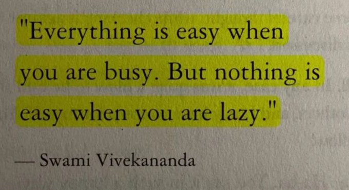

“Everything is easy when you are busy. But nothing is easy when you are lazy.” I read this line, often said to be from Swami Vivekananda, and I kept thinking about it. At first it sounds like simple advice to keep working. But the more I thought about it, the more I felt it is about what my mind does when I give it nothing to do. Here is what I learned from it.
When I am busy with useful work
When I am busy with work that matters, my mind has something real to focus on: tasks to finish, problems to solve, things to build.
This keeps me in the present. When I am busy, I spend far less time going round in circles about:
- what happened in the past, and what I could have done differently
- what might happen in the future, and what could go wrong
- what other people said, meant or might be thinking
- things I cannot control, no matter how much I think about them
Being busy does not mean I will never overthink. But useful work gives my mind a clear direction.
When I have too much free time
When I have nothing interesting to do, my mind starts going back to old situations or worrying about problems that have not happened yet.
Thinking is not bad. Looking back helps me learn, and planning helps me prepare. The problem starts when I keep thinking the same thoughts again and again, and it leads to nothing useful.
For example, I might keep thinking about something that happened yesterday, get angry about it again, and then be impatient with my family or friends who had nothing to do with it.
I may not have been able to control what happened. But I could control how I reacted, and my reaction created a new problem, for me and for the people around me.
What this quote means to me
For me, this quote is not about being busy every minute of the day. It is about using my mind in a good way. I see two very different ways I can spend my time.
Using my mind well
Focusing on something useful, accepting what I cannot change, and dealing calmly with what is happening right now.
Getting stuck in my thoughts
Going back to the past again and again, worrying about a future nobody can predict, and letting that anger come out on the people around me.
Being busy is not always the answer
Staying busy does not fix everything. Sometimes what I need is rest, some quiet time, or time to understand how I feel.
The goal is not to run away from my thoughts by staying busy all the time. It is to stop getting stuck in thoughts that do not help me.
What I am taking from this
I cannot control everything that happens around me. But I can choose what I focus on, how I react, and how I treat the people around me.
Understanding my own thoughts a little better makes life a little easier, not just for me, but for the people around me too.